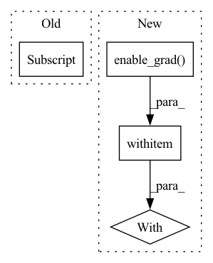

Pattern ID :6085
Before Change
state["z"] = torch.zeros_like(p.data)
state["n"] = torch.zeros_like(p.data)
z, n = state["z"], state["n"]
theta = (n + grad ** 2).sqrt() / group["alpha"] - n.sqrt()
z.add_(grad - theta * p.data)
n.add_(grad ** 2)
p.data = (After Change
def step(self, closure=None):
loss = None
if closure is not None:
with torch .enable_grad():
loss = closure()
for group in self.param_groups:
for p in group["params"]:
if p.grad is None:In pattern: SUPERPATTERN
Frequency: 3
Non-data size: 4
Instances Fragment ID: 21114496
Project Name: ryantd/veloce
Commit Name: 38281d6b3d7be0182da4d9a2f3a3b0a4ad2897f1
Time: 2022-02-16
Author: xiaoyu.zhai@hotmail.com
File Name: phetware/optimizer/ftrl.py
M Class Name: FTRL
N Class Name: FTRL
M Method Name: step(2)
N Method Name: step(2)
M Parent Class: Optimizer
N Parent Class: Optimizer
M File Name: phetware/optimizer/ftrl.py
N File Name: phetware/optimizer/ftrl.py
M Start Line: 22
M End Line: 41
N Start Line: 21
N End Line: 48
Before Change
if "step" in group:
group["step"] += 1
else:
group["step"] = 1
bias_correction1 = 1.0 - beta1 ** group["step"]
bias_correction2 = 1.0 - beta2 ** group["step"]After Change
loss = None
if closure is not None:
with torch .enable_grad():
loss = closure()
if self.defaults["max_grad_norm"] > 0:
device = self.param_groups[0]["params"][0].device Fragment ID: 21114494
Project Name: sail-sg/adan
Commit Name: 4ae2620b2218c057ef5c57194d1d142b80833137
Time: 2022-10-27
Author: xyxie@pku.edu.cn
File Name: adan.py
M Class Name: Adan
N Class Name: Adan
M Method Name: step(2)
N Method Name: step(1)
M Parent Class: Optimizer
N Parent Class: Optimizer
M File Name: adan.py
N File Name: adan.py
M Start Line: 85
M End Line: 173
N Start Line: 85
N End Line: 182
Before Change
sequence_input, linear_param0, linear_param1, bn_weight0, bn_bias0, bn_weight1, bn_bias1 = ctx.saved_tensors
if not sequence_input.requires_grad:
return (None,) * 9
out0, out1 = ctx.output_list[0] .chunk(2, -1)
with torch.no_grad():
inp0 = out0 - ReversibleRNNFunction._calc(out1, sequence_input, bn_weight1, bn_bias1, linear_param1)
inp1 = out1 - ReversibleRNNFunction._calc(inp0, sequence_input, bn_weight0, bn_bias0, linear_param0)After Change
with torch.no_grad():
inp0 = out0 - ReversibleRNNFunction._calc(out1, sequence_input, bn_weight1, bn_bias1, linear_param1)
inp1 = out1 - ReversibleRNNFunction._calc(inp0, sequence_input, bn_weight0, bn_bias0, linear_param0)
with torch .enable_grad():
fn_input = torch.cat([inp0, inp1], -1)
fn_input.detach_()
fn_input.requires_grad_(True)
args = (fn_input, sequence_input, linear_param0, linear_param1, bn_weight0, bn_bias0, bn_weight1, bn_bias1) Fragment ID: 21114493
Project Name: homebrewnlp/homebrewnlp
Commit Name: a0f0b4030e607ddb8baa74812668409814dc9a48
Time: 2020-07-13
Author: 39779310+ClashLuke@users.noreply.github.com
File Name: module.py
M Class Name: ReversibleRNNFunction
N Class Name: ReversibleRNNFunction
M Method Name: backward(2)
N Method Name: backward(2)
M Parent Class: torch.autograd.Function
N Parent Class: torch.autograd.Function
M File Name: module.py
N File Name: module.py
M Start Line: 50
M End Line: 58
N Start Line: 51
N End Line: 67